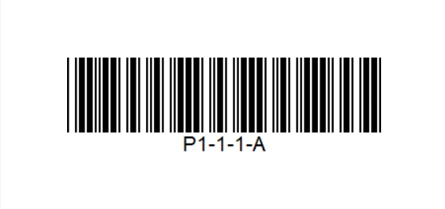
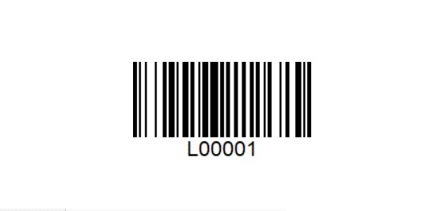
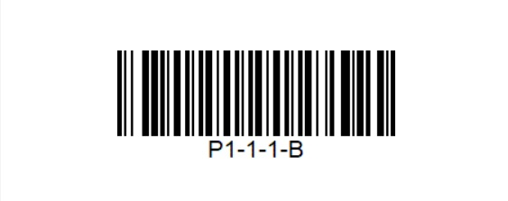

WMS Worker compatibility
The app is web-based and does not require any installation.
These are the requirements for mobile RF handheld devices when using WMS Worker.
- Operational system: Android 8.0 (Oreo) or higher
- Minimum RAM: 1GB, recommended: 2GB or higher
- Minimum Processor: 1GHZ
- The following screen resolutions (pixel dimensions) are supported:
The following Android devices have been tested:
- ??? Other models may work as well when meeting the other requirements in this document but cannot be guaranteed.
Recommendations:
- The manufacturers device software should allow to configure following scanner settings on the device:
- Convert barcode input via scan head or camera to text
- Possibility to give an automatic ENTER after a scan
- Identifies GS1-128/EAN128 barcodes (when such is used in the warehouse)
Test WMS Worker with your mobile RF handheld devices
You have a mobile RF handheld devices and you want to make sure it is compatible with WMS Worker? We've created a test environment where you can test the WMS Worker in action.
How to test your device:
- Open the following link in the browser of the mobile terminal https://testdb.my.erp.net/cl/wms/ user: admin password: 123
- Select Orders
- Select Warehouse Order 0000000003
- Change the Quantity of the first line to 4
- Scan the Location 
- Scan the Lot 
- Press Execute
- Scan the Location for the second line 
- Press Execute
You have executed your first order!